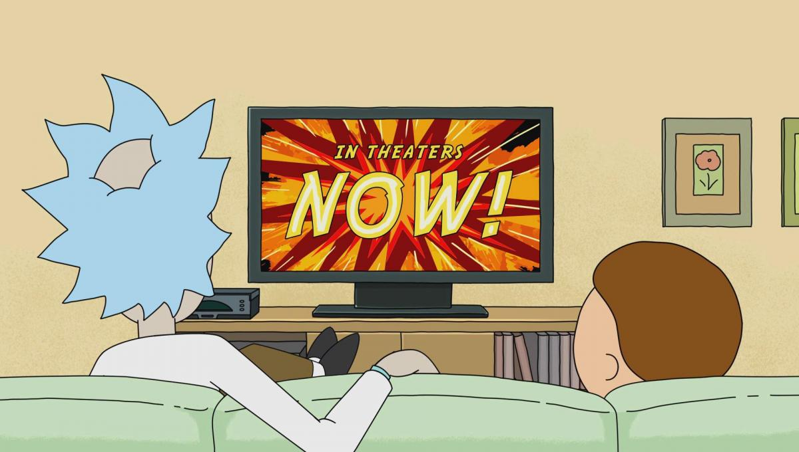

<ion-header>
  <ion-toolbar>
    <ion-title>Episodios</ion-title>
  </ion-toolbar>
</ion-header>

<ion-content padding class="background">
  <ion-grid>
    <ion-row>
      <ion-col *ngFor = "let item of listepi" col-6 no-padding>
    <ion-card>
      
  <ion-card-content>
    <ion-card-title>
      {{item.name}}
    </ion-card-title>
    <span><strong>Air Date: </strong> {{item.air_date}}</span><br>
    <span><strong>Episode: </strong>{{item.episode}}</span><br>
    <span><strong>Created: </strong>{{item.created}}</span><br>
  </ion-card-content>
  </ion-card>
  </ion-col>
</ion-row>
  </ion-grid>
</ion-content>

<ion-footer>
<ion-toolbar class="ion-text-center">
  <ion-buttons slot = "start" *ngIf = "pagina > 1">
    <ion-button (click) = "buscarepisodios(pagina - 1)">
      <ion-icon name="chevron-back-outline"></ion-icon>
    </ion-button>
  </ion-buttons>

  Página: {{pagina}}

  <ion-buttons slot = "end" *ngIf = "pagina < 3">
    <ion-button (click) = "buscarepisodios(pagina + 1)">
      <ion-icon name="chevron-forward-outline"></ion-icon>
    </ion-button>
  </ion-buttons>
</ion-toolbar>
</ion-footer>
